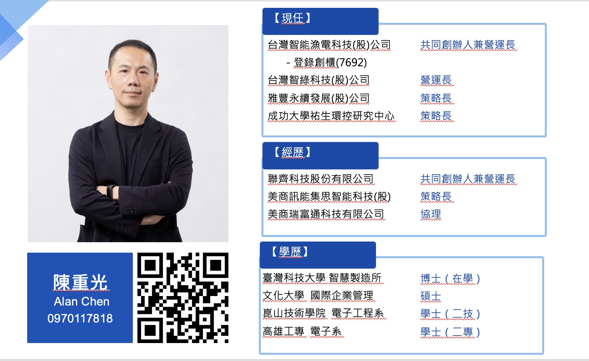
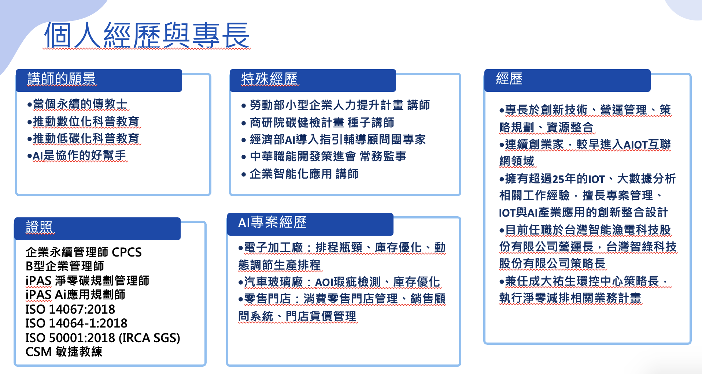
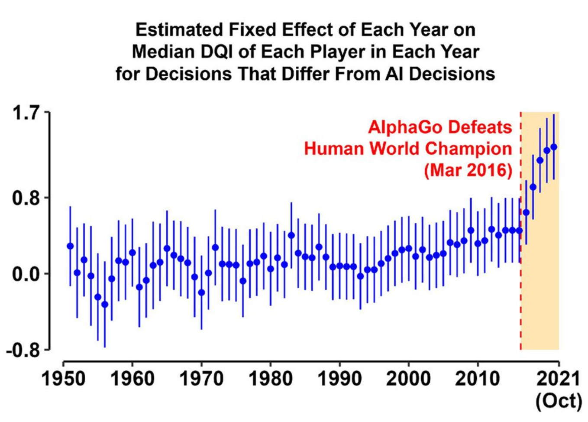
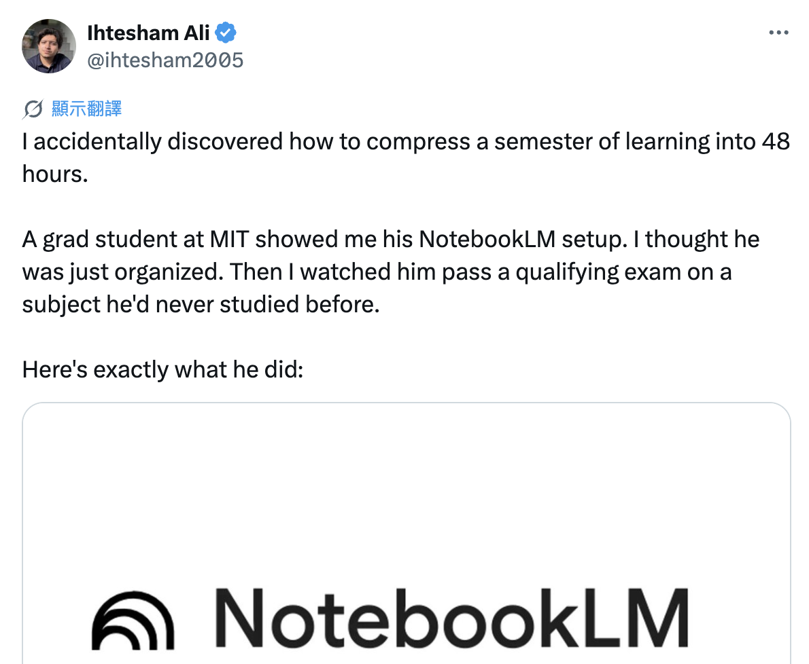

UNIVERSITY TALK · 2026
我們來聊聊 AI 世代的
演進
人駕馭 AI Token
·產生無限可能
一場關於人類潛能的分享
SPEAKER · 陳重光 ALAN CHEN
cooperation.tw


AGENDA · 今天的旅程
六個段落 — 從文明史到你的下一步
01
代價與駕馭力演進
三次技術革命的社會抗爭、三巨頭競速。
02
你在哪裡？
81 億人口中的 AI 使用分布與 Token 經濟。
03
三個核心能力
用工具 → 選工具 → 造工具。
04
AI 成熟度分級
從使用工具到方法創新（L1→L5）。
05
實戰行動
免費 AI API、AI 工具、第一步。
06
未來展望
OpenAI 社會契約、Token 預算、學習路徑。
BEFORE WE BEGIN
從砸機器
到扔汽油彈
到扔汽油彈
每次技術革命，都有人付出代價。
三個時代，三個故事，一個相同的模式。
三個時代，三個故事，一個相同的模式。
工業革命 · 1812 · 英格蘭約克郡
羅福茲磨坊之戰
150 名蒙面工人，手持鐵鎚和斧頭，深夜攻擊一座紡織磨坊。
一台剪切機取代五名熟練工人。省下的錢，沒有一分流向被取代者。
一台剪切機取代五名熟練工人。省下的錢，沒有一分流向被取代者。
結局：17 人被絞刑。政府派出 12,000 士兵鎮壓 — 比對付拿破崙的還多。
剪刀差：剪切機數月擴散，工人保護法等了 21 年
剪刀差：剪切機數月擴散，工人保護法等了 21 年
數位革命 · 2012
14 萬人 vs 13 人
柯達 1975 年發明了數位相機 —
然後決定把它藏起來。
2012 年柯達破產。
同年 Instagram（13 名員工）以 10 億美元被收購。
然後決定把它藏起來。
2012 年柯達破產。
同年 Instagram（13 名員工）以 10 億美元被收購。
啟示：柯達不是沒看到趨勢 — 他們發明了那個趨勢。
剪刀差：數位相機從發明到全面普及花了 25 年，但柯達所在城市的就業至今未恢復
剪刀差：數位相機從發明到全面普及花了 25 年，但柯達所在城市的就業至今未恢復
AI 革命 · 2026.4.10
Altman 家的汽油彈
凌晨 3:40，一名 20 歲青年向 OpenAI CEO 住宅投擲汽油彈。
Z 世代對 AI 的憤怒從 22% 攀升到 31%，希望從 27% 降到 18%。
Z 世代對 AI 的憤怒從 22% 攀升到 31%，希望從 27% 降到 18%。
214 年：從砸織布機到扔汽油彈，驚人相似的模式。
剪刀差：AI 數月改變就業市場，制度回應 3+ 年仍無實質進展
剪刀差：AI 數月改變就業市場，制度回應 3+ 年仍無實質進展
PART 1 · 制度追不上技術
技術擴散 → 制度回應 — 越來越快
工業革命
50年
技術擴散 → 制度回應
剪切機 → 工廠法（1833）
工會合法化等了 59 年
工會合法化等了 59 年
數位革命
10年
技術擴散 → 制度回應
數位相機 → 產業轉型
柯達城至今未復原
柯達城至今未復原
AI 革命
3+年
技術擴散 → 制度回應
尚無實質進展
UBI、AI 稅仍在「討論」
UBI、AI 稅仍在「討論」
2026 AI RACE
到底有多快？
三家巨頭用三種不同策略同時加速。
這不是一波一波的 — 是三波同時灌進來。
這不是一波一波的 — 是三波同時灌進來。
PART 1 · 三種護城河
三種護城河 — 三種追不上的方式
52 天 73 次
ANTHROPIC
想法 → 上線 → Dogfooding → 再發布
平均每天都在改變使用者工作流。
護城河：執行力
平均每天都在改變使用者工作流。
護城河：執行力
單次衝擊
OPENAI
每次發布都是市場級震動
改變整個產業的使用習慣。
護城河：品牌心智
改變整個產業的使用習慣。
護城河：品牌心智
無所不在
GOOGLE
10 億用戶 × 多入口
Workspace、Android、Cloud 全滲透。
護城河：生態分發
Workspace、Android、Cloud 全滲透。
護城河：生態分發
PART 1 · 三重印證
三組數據，同一個結論
社會代價
制度回應時間：50 年 → 10 年 → 3 年（仍無進展）
企業競爭
三巨頭同時加速：速度 × 衝擊 × 滲透 = 無處可逃
產業迭代
工業革命週期：100 年 → 10 年 → 1 年
速度，是這次革命的本質差異。所以真正的問題是：人類怎麼辦？
PART 01
01
人類駕馭力的演進
從火到 AI — 一條 40 萬年的曲線
PART 1 · 人類駕馭力的演進
從火到 AI — 一條 40 萬年的駕馭曲線
40 萬年前
🔥
火
= 出現文明
- · 烹飪、取暖
- · 夜間活動
- · 人類脫離動物界
~10000 BC
🐎
獸力·機械
= 效率
- · 農耕、運輸
- · 工業革命
- · 一人抵百人
1990s
💻
科技
= 創新
- · 網路、軟體
- · 平台經濟
- · 改變商業模式
NOW
🤖
AI Token
= 無限可能
- · 生成式 AI、Agent
- · 超級個體
- · 一人 = 一間公司
每個時代的贏家，都是最早學會駕馭新技術的人。
PART 1 · 駕馭火
駕馭火 — 文明的起點
40 萬年前，人類學會控制火
- · 烹飪 → 大腦發展
- · 夜間活動 → 社交文化
- · 冶煉金屬 → 工具進化
核心邏輯
火不是人類發明的，但人類學會「駕馭」。
驅動力是人對工具的掌控能力。
驅動力是人對工具的掌控能力。
火是第一個「通用技術」 — AI 是最新的，你正站在駕馭它的起點。
PART 1 · 獸力與機械
駕馭獸力與機械 — 效率的爆發
農業時代
~10000 BC
牛耕田、馬運輸
一頭牛 = 5 個人力
一頭牛 = 5 個人力
工業革命
1760s
蒸汽機、紡織機
一台 = 100 個工人
一台 = 100 個工人
電力時代
1880s
電動機、生產線
汽車的流水線
汽車的流水線
自動化
1970s
CNC、機器人
精準度超越人手
精準度超越人手
關鍵不是誰擁有工具，而是誰能駕馭工具。AI 也是同樣邏輯。
PART 1 · 駕馭科技
駕馭科技 — 數位創新
網路
1990s
撥接到寬頻
資訊傳播從天變秒
電子商務誕生
資訊傳播從天變秒
電子商務誕生
軟體
2000s
SaaS 雲端服務
Google、Facebook
軟體服務世界
Google、Facebook
軟體服務世界
平台
2010s
Uber、Airbnb
App Store、共享經濟
人人都是創業家
App Store、共享經濟
人人都是創業家
AI
2020s
ChatGPT、Claude
生成式 AI 革命
人人都是開發者
生成式 AI 革命
人人都是開發者
每個時代的贏家，都是最早學會駕馭新技術的人。
PART 1 · 駕馭力的本質
「人要比車兇」「看到我尾燈算你贏」— 鄭伊健《烈火戰車 2：極速傳說》1999
「人比 AI 凶」
不是 AI 有多強，是你用 AI 有多狠
— 萬維鋼《精英日課》
車子再好，不會開也沒用。AI 再強，不會用也是零。
決定勝負的，永遠是駕馭者。
決定勝負的，永遠是駕馭者。
PART 1 · 工業革命
工業革命的演進 — 從 1.0 到 5.0
1.0
動力與機械化
1784 蒸汽機
系統力
→ 操作導向
2.0
電力與規模化
1870 電力驅動
系統力
→ 流程導向
3.0
資訊與自動化
1969 PLC / IT
數位力
→ IT 導向
4.0
數據與智慧化
2011 IoT / AI
數位力
系統力
系統力
→ 數據導向
5.0
人機與永續化
NOW 人本 / ESG
數位力
系統力
永續力
系統力
永續力
→ 價值導向
PART 1 · 工業 5.0
工業 5.0 帶出現代人的三個能力
數
數位力
DIGITAL
- · 理解工具、運用科技
- · 提升決策與效率
- · AI 工具與數據處理能力
- · 已列入企業職能地圖
系
系統力
SYSTEM
- · 看見因果、跨域影響
- · 理解整體架構與連動關係
- · ESG 跨部門影響分析
- · 供應鏈風險管理核心能力
永
永續力
SUSTAINABILITY
- · 掌握風險、經營未來
- · 長期價值與利害關係人
- · 從合規揭露到戰略 ESG
- · 永續 = 競爭力
底層共通：迭代的適應力。
PART 1 · 迭代週期
迭代週期 — 加速度在哪裡？
100 年
駕馭獸力 → 機械動力
蒸汽機、電力、工業革命
10 年
科技、數位轉型
網路、SaaS、平台經濟
1 年
AI 的企業、職能轉型
生成式 AI 重塑工作流程
1 個月
AI 三巨頭持續加速中
OpenAI · Anthropic · Google
AlphaGo 重擊圍棋圈 — AI 第一次擊敗人類
李世石（韓國九段）vs AlphaGo · Seoul · 2016 / 03
2016 / 03
AlphaGo 4 : 1 擊敗李世石
人類世界最會下圍棋的男人 — 學習人類棋譜後反超
人類世界最會下圍棋的男人 — 學習人類棋譜後反超
2017 / 10
AlphaGo Zero 100 : 0 擊敗 AlphaGo
完全不看人類棋譜 — 自己跟自己下，反而更強
完全不看人類棋譜 — 自己跟自己下，反而更強
意義：AI 不只「複製人」，還能「超越人」 — 圍棋圈原本的秩序被打破
但人類也在進化 — AI 推著棋手變得更有創造力

Source: Shin et al., PNAS 2023 · doi:10.1073/pnas.2214840120
DQI（Decision Quality Index）
衡量每一手棋是否為「新招」 — 評估創造性與決策品質
2016 之前：年均上升幅度 ≤ 0.2
2018 之後：年均上升 > 0.7（4 倍速躍升）
「人類需要適應，並在這基礎上發揮潛力」
MIT 學生用 48 小時通過資格考 — 學習效率躍升

@ihtesham2005 on X · 14K 讚 · 27K 收藏 · 3M 瀏覽
事件：MIT 研究生用 NotebookLM，48 小時內通過從沒讀過的科目資格考
素材：6 本教科書 + 15 篇論文 + 課堂逐字稿
Prompt 1 — 找核心心智模型
「列出這個領域所有專家共有的 5 個核心心智模型」
Prompt 2 — 找根本歧異
「指出 3 個專家之間意見根本對立的地方，雙方最強的論點是什麼」
Prompt 3 — 鑑別深度理解
「設計 10 個能識破誰只是背書 vs 真正懂的問題」
把 NotebookLM 當「讀完一切的家教」，不是「螢光筆」
PART 02
02
你在哪裡？
AI 使用現狀與 Token 經濟
世界總人口 81 億 — 你在哪個方塊？

Source: r/vibecoding (Reddit, Feb 2026)
84%
68.8 億
沒用過 AI
16%
13.8 億
對話過
0.3%
2,500 萬
付費訂閱
0.04%
500 萬
AI 產出專案
每個方塊代表 320 萬人。你現在在哪一格？今天結束後，你至少會在綠色方塊。
PART 2 · 84% 沒用過
84% 的人 — 從來沒用過 AI
為什麼這麼多人沒用過
- · 基礎設施不足（網路、設備）
- · 語言障礙（英語為主）
- · 年齡與數位落差
- · 不知道 AI 能做什麼
- · 沒有動機
→
這代表什麼機會
你是大學生，你有：
- · 網路 ✓ 設備 ✓
- · 英文能力 ✓ 學習動機 ✓
你已比 84% 的人更有條件 — 問題只剩：要不要開始？
PART 2 · 16% 對話過
16% 的人 — 跟 AI 對話過
這群人怎麼用 AI
- · 問問題、查資料（取代 Google）
- · 翻譯、摘要、改文法
- · 聊天、好奇試玩
- · 偶爾寫寫文案
→
停留在這層的問題
- · 不會 Prompt Engineering
- · 沒有系統性的使用場景
- · 不知道 AI 的極限在哪
- · 「AI 好像也沒那麼厲害」
從「用過」到「會用」的距離 — 就像會開車 ≠ 會賽車。今天的目標：讓你坐上駕駛座。
PART 2 · 頂端 0.3% / 0.04%
頂端的 0.3% 和 0.04%
0.3% · 2,500 萬人
付費訂閱 AI 服務
- · ChatGPT Plus（$20/月）
- · Claude Pro（$20/月）
- · Gemini Advanced（$20/月）
- · Copilot Pro（$10/月）
- · Cursor Pro（$20/月）
→
0.04% · 200-500 萬人
用 AI 產出程式專案
- · Vibe Coding（氛圍編程）
- · AI 輔助全棧開發
- · 自動化腳本與工具
- · AI Agent 應用
- · 開源專案貢獻
這些人 = 新時代的駕馭者。
PART 2 · 舉手互動
你現在在哪個方塊？
⬜
從沒用過 AI
🟩
用過、聊過
🟨
付費訂閱中
🟥
已產出 AI 專案
舉手看看 — 你在哪一格？
PART 2 · Token 消費金字塔
Token 消費金字塔 — 你在哪一層？
⬜
沒用過 AI68.8 億人
免費
免費額度偶爾用用 ChatGPT 免費版
$20
基本訂閱ChatGPT Plus / Claude Pro
$200
重度使用Claude Max / Teams
API
信用卡額度Token 消費 = 生產力投資
PART 2 · 一個人的價值
一個人的價值
決定在你能駕馭多少 Token
決定在你能駕馭多少 Token
薪資 = 2× · Token 預算 = 10 人的產出
年薪百萬工程師 + Token 預算 = 過去 10 人才能完成的工作量。
這不是未來，是矽谷正在發生的事。
這不是未來，是矽谷正在發生的事。
JENSEN HUANG · NVIDIA
「我完全可以想像，在未來，我們公司每一位工程師都將有一筆年度 Token 預算。」
「年薪可能是幾十萬，我會在薪水之上再給他們一半作為 Token，讓他們的生產力放大十倍。」
矽谷最新招募籌碼 — 你的 Offer 包含多少 Token？
PART 2 · 衡量能力
衡量能力的辦法 — 指標多元化
傳統衡量方式
- · GPA / 成績排名
- · 學歷（哪個學校畢業）
- · 證照數量
- · 工作年資
- · 職位頭銜
單一維度、線性累積
→
AI 時代衡量方式
- · GitHub Stars / 專案數量
- · 追蹤人數 / 影響力
- · AI 工具的使用深度
- · 能解決問題的複雜度
- · 作品集（Portfolio）
多元維度、指數成長
PART 03
03
三個核心能力
用工具 → 選工具 → 造工具
PART 3 · 學習階段
學習的三個階段
大
大學生
UNDERGRAD
- · 給你問題 ✓
- · 給你工具 ✓
- · 給你方法 ✓
碩
碩士
MASTER
- · 給你問題 ✓
- · 自己找工具
- · 自己找方法
博
博士
PHD
- · 自己找問題
- · 自己找工具
- · 自己找方法
AI 時代模糊了這三個階段 — 大學生也可以「自己找問題、自己解決」。
PART 3 · 三個核心能力
用工具 → 選工具 → 造工具
1
學會用工具
TOOL USER
- · 會用 ChatGPT / Claude
- · 會寫基本 Prompt
- · 能完成作業報告
- · 理解 AI 能力邊界
佔人口16%
2
學會選工具
TOOL SELECTOR
- · 知道不同 AI 的強項
- · 能為特定任務選工具
- · 會評估 AI 輸出品質
- · 建立自己的 AI 工作流
佔人口0.3%
3
學會創建工具
TOOL CREATOR
- · 用 AI 寫程式、建系統
- · 設計 AI Agent 流程
- · 整合 API 與自動化
- · 從消費者變成創造者
佔人口0.04%
PART 3 · 市場現實
企業要的是什麼？
企業不缺的 ✕
- · 會用 ChatGPT 聊天的人
- · 把 AI 當搜尋引擎用的人
- · 只會 copy-paste 的人
- · 自稱會 Prompt Engineering，但只會基本對話
→
企業真正要的 ✓
- · 能用 AI 改造工作流程
- · 能識別哪些流程可 AI 化
- · 能評估 AI 方案 ROI
- · 能設計 AI + 人的協作模式
「會用 AI」是門檻，「能用 AI 改造流程」才是價值。
PART 3 · 診斷流程
企業 AI 服務診斷流程
1
識別痛點
哪些流程耗時、重複性高、容易出錯？
→ Pain Points
2
評估可行性
適合 AI 處理嗎？資料是否足夠？
→ Feasibility
3
選擇工具
ChatGPT API？自建模型？現成 SaaS？
→ Tooling
4
設計流程
AI + 人怎麼協作？誰做最後決策？
→ Workflow
5
驗證優化
實際效果？成本合理？持續迭代
→ Iterate
PART 3 · 思維陷阱
想看的是終點，卻忽略了過程
大多數人看到的
- · 別人的完成品、成功案例
- · AI 工具的酷炫 Demo
- · 一夜之間成功的故事
- · 「AI 好厲害」的新聞標題
→
他們沒看到的
- · 無數次失敗的 Prompt 嘗試
- · 學習工具的時間投入
- · 建立工作流的反覆迭代
- · 從 0 到 1 的痛苦過程
PART 3 · 學習新定義
AI 時代 — 學習方法的新定義
大學 + AI
SUPER TOOLKIT
AI 就是你的超級工具箱，每個科目都能用 AI 加速學習。
每堂課試著用 AI 協作完成
每堂課試著用 AI 協作完成
碩士 + AI
RESEARCH PARTNER
AI 幫你搜文獻、做實驗，你負責問對問題和驗證結果。
用 AI 做文獻回顧，自己判斷 research gap
用 AI 做文獻回顧，自己判斷 research gap
博士 + AI
FRONTIER EXPLORER
AI 幫你探索未知領域，你定義什麼問題值得解決。
用 AI 做創新性分析，原創洞察來自你
用 AI 做創新性分析，原創洞察來自你
PART 3 · 身分轉換
從消費者到創造者
AI 消費者
- · 用別人做好的 AI 產品
- · 在現成介面裡打字
- · AI 給什麼就接受什麼
- · 被動等待新功能
- · 「AI 好厲害但跟我無關」
使用者，不是駕馭者
→
AI 創造者
- · 用 AI 建造自己的工具
- · 設計自己的 AI 工作流
- · 能判斷 AI 的輸出品質
- · 主動探索 AI 的邊界
- · 「我能用 AI 做什麼？」
駕馭者 — 而且比 AI 凶
PART 3 · 關鍵技能
WEF 2025 關鍵技能 × 三力模型
數
數位力
DIGITAL
- · 04 創意思維
- · 06 科技素養
- · 07 好奇心與終身學習
系
系統力
SYSTEM
- · 01 批判性思維
- · 02 韌性與彈性
永
永續力
SUSTAINABILITY
- · 03 領導力與社會影響力
- · 05 自我激勵與自我覺察
Source: WEF Future of Jobs Report 2025 — 三力覆蓋所有關鍵技能。
PART 04
04
AI 應用成熟度五分級
從使用工具到方法創新
PART 4 · AI 成熟度模型
從使用工具到方法創新 — 你在哪一層？
L1
使用工具
AI 幫我做事
→ 單次結果
L2
工具組合
我會串工具
→ 標準流程
L3
創建工具
我做 AI 工具
→ 重複資產
L4
改造流程
用 AI 改流程
→ 系統效率
L5
方法創新
用 AI 創新
→ 新範式
大多數人在 L1，今天帶你看到 L5 的可能。
L1 · 使用工具
L1 使用特定工具 — 單點加速
論文寫作
ChatGPT 改 abstract
Claude 摘要文獻
AI Studio 潤英文
Claude 摘要文獻
AI Studio 潤英文
做簡報
ChatGPT 生大綱
Canva AI 排版
Canva AI 排版
知識管理
NBLM 問 PDF
Obsidian AI 分類
Obsidian AI 分類
問卷設計
AI 幫寫題目
自動產生選項
自動產生選項
判斷指標：還是「人做主流程」，AI 只是單點助手。
L2 · 工具組合
L2 不同工具組合 — Workflow
論文寫作
PDF → NotebookLM → ChatGPT → R code → Word
從片段生成進入「可完成一輪初稿」
從片段生成進入「可完成一輪初稿」
做簡報
會議錄音 → AI 摘要 → 自動投影片 → 圖像生成 → 講稿
可上台簡報版本 + speaker note
可上台簡報版本 + speaker note
知識管理
Google Drive → Obsidian → Notion Dashboard → 每日摘要
專案知識地圖、文件對應關係
專案知識地圖、文件對應關係
問卷設計
研究目的 → 題項生成 → 專家效度 → GAS
可發放問卷 + 題項維度 mapping
可發放問卷 + 題項維度 mapping
AI 開始參與完整流程，而非單點。
L3 · 創建工具
L3 創建工具 — Builder
論文自動化工具
- · 文獻矩陣生成器
- · 統計表自動產生器
- · Reference formatter
一鍵生成 appendix、regression table
簡報模板產生器
- · 課程簡報模板產生器
- · 自動案例填充系統
同主題快速客製不同客戶版
知識庫引擎
- · CLI 自動分類器
- · Google Sheet RAG 索引器
可搜尋知識庫
題庫系統
- · 題庫生成器
- · 反向題自動化
快速生成多版本問卷
開始把高頻工作產品化 — 做出來的工具可以重複使用。
L4 · 改造流程
L4 改造流程 — Process Re-engineering
傳統論文流程
RQ → 文獻 → 理論 → 方法 → 寫作
L4 論文流程
RQ → Agent 文獻地圖 → 自動假說候選 → 模型實驗 → Reviewer Critic → 成稿
傳統簡報流程
自己做 → 改版 → 排版
L4 簡報流程
知識庫 → Audience Persona → 自動故事線 → 版型 → 練講稿
不只是快，而是改變事情本來怎麼做。從「存檔」變成「問題驅動知識生產系統」。
L5 · 方法創新
L5 不是用 AI 做更快 — 而是工作方法本身被重新定義
論文
MULTI-AGENT
用 Agent 重新定義科學發現 — 文獻、假說、實驗驗證全自動。
簡報
AI PERSUASION
針對受眾生成不同說服路徑 — CFO 看 ROI、董事會看風險。
知識管理
INSIGHT ENGINE
從「儲存知識」變「生產洞察」— 論文資料庫主動產出新研究問題。
問卷
AI-NATIVE
RQ → construct → 題項 → 預測 loading → 重寫，AI 全程參與。
L5 不是用 AI 做更快，而是讓工作方法本身被重新定義。
L5 · 四場景深入
L5 方法創新 — 四場景深入
論文：AI 成為研究方法
Multi-Agent Scientific Research Framework：Literature + Theory + Experiment + Reviewer Agent。
研究貢獻不只是結果，而是如何用 Agent 改造 scientific discovery
研究貢獻不只是結果，而是如何用 Agent 改造 scientific discovery
簡報：從投影片變決策系統
AI 根據受眾自動生成不同說服路徑：對 CFO 講 ROI、對工務講節能、對董事會講風險。
AI-driven persuasion methodology
AI-driven persuasion methodology
知識：從儲存變知識生產
論文 → 教案、案例 → 模板、問卷結果 → 新假說。AI 主動產生下一個研究問題。
Knowledge-to-Insight Engine
Knowledge-to-Insight Engine
問卷：AI-native 研究設計
RQ → 抽 construct → 對應理論 → 生成題項 → 預測 loading → 根據 pilot data 重寫。
AI-native psychometric methodology — 非常有發表潛力
AI-native psychometric methodology — 非常有發表潛力
PART 4 · 一句話判斷
你在哪一層？— 一句話判斷
L1
AI 幫我做事
→ 單點任務加速
L2
我會串工具
→ 標準流程
L3
我做 AI 工具
→ 重複資產
L4
用 AI 改流程
→ 系統效率
L5
用 AI 創新
→ 新範式
實戰案例 — SecondBrain 第二大腦：架構層

Layer 1 · 輸入
PDF、網頁、語音、會議錄音
Layer 2 · AI 處理
摘要、標記、連結、翻譯
Layer 3 · 知識庫
Obsidian + Notion + Git
Layer 4 · 產出
簡報、論文、教材、自動報表
380 筆知識條目，4 個 Notion 資料庫整合，7 大類自動分類 — 這是 L4→L5 的真實案例。
實戰案例 — SecondBrain 第二大腦：資訊流

Capture
多源擷取
→
AI Agent
處理 + 增強
→
知識圖譜
互連網路
→
Auto Sync
Git→Notion
→
Produce
簡報·論文
知識不再是「存起來偶爾翻」，而是自動流動、自動產出。這就是 L5 的實踐。
PART 05
05
實戰行動
你的第一步
PART 5 · 免費 AI API
三大平台不用綁卡 — 打造你的 AI
Groq
LPU 極速推論 · 14,400/天
- · llama-3.3-70b
- · qwen3-32b
- · kimi-k2（1T 參數）
- · Whisper STT 全免費
Google AI Studio
Gemini 2.5 Flash · 250/天
- · 1M context 超長上下文
- · 一次丟整篇論文
- · 多語言 TTS
OpenRouter
28 個免費模型 · 50/天
- · step-3.5-flash · GLM-4.5
- · Llama 3.3 · Qwen3-Coder
- · OpenAI 兼容格式
Groq 主力（最快最多）· Gemini 長文本（1M context）· OpenRouter 備援（多模型 A/B）
PART 5 · 工具全景
AI 工具全景 — 免費就能開始
工具
用途
免費版
Pro
ChatGPT
聊天 / 寫作
GPT-5.5 mini 無限
$20/月
Claude
分析 / 程式
Sonnet 有限
$20/月
Gemini
搜尋 / 整合
2.0 Flash 無限
$20/月
Copilot
程式碼
學生免費
$10/月
Perplexity
研究 / 搜尋
基本搜尋
$20/月
NotebookLM
文件分析
50 個筆記免費
—
PART 5 · 實戰技巧
Prompt Engineering — 跟 AI 說話的藝術
✕ 新手的 Prompt
- · 「幫我寫一篇報告」
- · 「翻譯這段文字」
- · 「寫一個程式」
→
✓ 駕馭者的 Prompt
「你是行銷策略專家。請為手搖飲品牌撰寫 ESG 行銷方案，目標客群 18-25 歲，包含社群媒體策略，預算 50 萬，請用表格呈現 3 個方案比較。」
R
角色
ROLE
C
背景
CONTEXT
T
任務
TASK
F
格式
FORMAT
PART 5 · 學習心態
AI 輔助學習的正確心態
✕ 危險的使用方式
- · 直接複製 AI 答案交作業
- · 完全不看就提交
- · 用 AI 替代思考過程
- · 「AI 會了所以我不用學」
- · 不驗證 AI 的回答正確性
- · 交出自己都看不懂的內容
→
✓ 正確的使用方式
- · AI 是研究助手，不是代筆
- · 先自己思考，再用 AI 驗證
- · 理解 AI 回答，再融入觀點
- · 用 AI 學更快，但學更深
- · 質疑 AI — 它也會犯錯
- · 交出自己完全理解的成果
用 AI 放大你的能力，而不是取代你的思考。
PART 5 · 無限可能
AI + 你的專業 = 無限可能
商 管
商管 + AI
市場分析、自動化報告、客戶洞察 — 數據驅動的策略顧問。
設 計
設計 + AI
生圖、UI 原型、風格轉換 — 產能 10 倍的設計師。
法 律
法律 + AI
合約審查、判例搜尋、法規比對 — 效率型法律工作者。
醫 護
醫護 + AI
文獻回顧、病歷分析、用藥建議 — 研究型臨床專家。
教 育
教育 + AI
個人化教材、自動出題、學習分析 — 精準教育設計師。
工 程
工程 + AI
程式碼生成、模擬分析、CAD 自動化 — 10x 工程師。
PART 5 · Vibe Coding
三家代表 × 三級用法
Claude
寫程式 + 渲染
- · Artifacts 即時預覽網頁
- · Claude Code AI 工程師
- · 理解整個專案結構
ChatGPT Codex
寫代碼
- · GPT-5.5 程式碼生成
- · Codex Agent 自主修 bug
- · GitHub 整合、PR 自動產出
Antigravity IDE
全端開發
- · AI 原生 IDE 環境
- · 描述需求即生成應用
- · 從想法到部署一站完成
用自然語言描述你要什麼，AI 幫你寫程式。全球只有 0.04% 的人到達這個層級。
PART 5 · 動手練習 ①
5 分鐘做出你的第一個網頁
個人介紹頁
名字、學校科系
興趣專長、自介
作品集或社群連結
興趣專長、自介
作品集或社群連結
社團招募頁
社團名稱、活動亮點
加入理由、社員心得
報名方式與 QR Code
加入理由、社員心得
報名方式與 QR Code
專題展示頁
研究主題、問題與方法
關鍵成果、團隊成員
技術架構說明
關鍵成果、團隊成員
技術架構說明
創業 Landing
產品名稱、痛點
目標客群、產品特色
CTA 按鈕與定價
目標客群、產品特色
CTA 按鈕與定價
推薦 Claude App — Artifacts 即時渲染，做完直接分享連結。
PART 5 · 動手練習 ②
一句話做出你的小遊戲
貪吃蛇
CLASSIC
經典觸控遊戲
滑動操控、撞牆即結束
滑動操控、撞牆即結束
彈跳球
PHYSICS
物理碰撞、重力反彈
體驗動態互動
體驗動態互動
猜數字
LOGIC
輸入數字、提示大小
邏輯推理小品
邏輯推理小品
心理測驗
QUIZ
多題分支、結果判定
人格分析趣味題
人格分析趣味題
規則：一句話 ≤ 30 字 · 15 分鐘做出可玩版本 · 手機就能完成
PART 5 · 同題三家做
Claude × ChatGPT × Gemini
Claude
ARTIFACTS 即時渲染
App / 網頁皆可
做完直接玩、分享連結
→ 想立刻看到成果
做完直接玩、分享連結
→ 想立刻看到成果
ChatGPT
CANVAS + CODE INTERPRETER
App / 網頁皆可
程式碼完整、邏輯清楚
→ 想理解怎麼做的
程式碼完整、邏輯清楚
→ 想理解怎麼做的
Gemini
CANVAS + GOOGLE 整合
App / 網頁皆可
對話順暢、回應快
→ 想體驗免費模型
對話順暢、回應快
→ 想體驗免費模型
挑戰：同一句話 → 餵給其中 2 家 → 比速度 / 可玩度 / UI 美感
PART 5 · 五分鐘分享
你的遊戲長什麼樣？— 分組互玩、互投票
最好玩獎
FUN
玩得停不下來
遊戲性最強
遊戲性最強
最有設計感獎
DESIGN
UI / UX 最舒服
視覺最有質感
視覺最有質感
最有創意獎
CREATIVE
想法最跳 tone
意想不到的點子
意想不到的點子
一句話心得：「同一句話，三家 AI 給的結果有什麼不一樣？」
PART 06
06
未來已來
你準備好了嗎？
BBC NEWS · 2025.11.18
假如
AI 泡沫來臨
"No company is going to be immune,
including us."
「沒有任何公司能夠免疫，
包括我們。」
— Google CEO Sundar Pichai
連 Google 的 CEO 都這麼說了。
你覺得你的產業、你的職位，能免疫嗎？
JENSEN HUANG · 語錄集
「AI 不會取代你的工作，但會用 AI 的人會。」
「每位工程師都將有年度 Token 預算。」
「你的 Offer 包含多少 Token？」
「AI 讓一個人能做到過去十個人的工作。」
OPENAI POLICY WHITE PAPER · 2026.04
超級智慧時代的社會契約
四天工作制不減薪 — 人類工作型態轉向高效產出
主權財富基金 — 用 AI 收益直接回饋全民
AI 存取權 = 基本經濟權利 — 不是奢侈品
歷史告訴我們：每次技術革命最終都靠制度改革解決。這次的差別是 — 連 AI 公司自己都在催促制度跟上。
PART 6 · 未來薪資
薪資結構的未來 — Token 成為生產力貨幣
現在的薪資結構
- · 底薪 + 獎金 + 股票
- · 能力 = 個人產出
- · 升遷 = 管更多人
- · 年資 = 更高薪水
天花板：你的時間有限
→
未來的薪資結構
- · 底薪 + Token 預算 + 股票
- · 能力 = 個人 × AI 槓桿
- · 升遷 = 駕馭更多 Token
- · 效率 = 10x 生產力
天花板：你的想像力
年薪 50 萬 + Token 預算 25 萬 = 10 人的產出。矽谷 2026 標準 Offer。
PART 6 · 未來已來
你的 AI 學習路徑 — 從今天開始
1
今天
30 分鐘
註冊 AI 工具帳號、練習寫 Prompt
2
本週
每天 15 分鐘
註冊 Groq / AI Studio 免費 API、每天用 AI 完成一件事
3
本月
每週 2 小時
建立 AI 工作流、用 AI 做一份完整作業
4
本學期
持續累積
完成一個 AI 輔助專案、建立 GitHub Portfolio
5
畢業前
融入日常
成為 AI 駕馭者 — 能用 AI 解決複雜問題
最重要的一步永遠是第一步。
CLOSING · 今天的關鍵收穫
Take Away
01
駕馭力
文明躍遷，都是人類學會「駕馭」新工具。
02
Token 價值
一個人的價值 = 你能駕馭多少 Token。
03
三階段
用工具 → 選工具 → 造工具。
04
五層分級
L1 做事 → L2 串工具 → L3 做工具 → L4 改 SOP → L5 創新方法。
05
稀缺性
全球 0.04% 的人在用 AI 創造專案 — 你現在就可以加入。
06
行動
從今天開始：註冊免費 AI API、練習、累積你的作品。
CLOSING · 雙面性
這是一個最好的時代 — 也是一個最糟的年代
最好的時代
- · NotebookLM 讓人深度學習一個領域
- · 上傳論文 → AI 生成 Podcast → 一天聽懂
- · AI 輔助讓門檻大幅降低
最糟的年代
- · 博士論文造假 — AI 完美生成「DOI 造假」
- · 學術誠信底線正被挑戰
- · 當 AI 能產出「看起來像論文」
真正的研究貢獻反而稀缺
CLOSING · 時代 vs 年代
時代 vs 年代
時代
長期趨勢
AI 會改變學習與成長的方式。
- · 研究方法會進化
- · 知識生產會加速
- · 跨領域會成為常態
年代
過渡時期
沒有規則跟方法可以遵守。
- · 學校還沒教
- · 期刊還在摸索
- · 每個人各憑本事
過渡期 — 有方法的人走得快，沒方法的人走得險。
CLOSING · Q & A
Q & A
我們來聊聊你心中的困惑
AI 會不會讓我找不到工作？
不是資工系也能學 AI 嗎？
從哪裡開始最好？
AI 生成的作業算抄襲嗎？
當 AI 變得人人可用，能力的差距將不只在智慧
你只管勇往直前
與 AI 協作的架構 我們來建
cooperation.tw